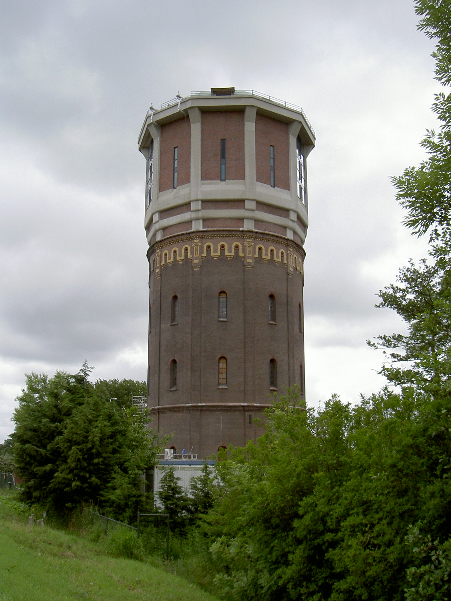

Assendelft heeft de langste dorpsstraat met de naam Dorpsstraat van heel Nederland.
Deze loopt van het Noordzeekanaal tot aan Krommenie,
een lengte van 7,2 kilometer.[3] Een langere dorpsstraat is die van Valthermond, genaamd Zuiderdiep,
met een lengte van 8,3 kilometer.

De Watertoren
De watertoren van Assendelft dateert uit 1885. Dit is de oudste nog bestaande watertoren in Noord-Holland,
al wordt hij niet meer als watertoren gebruikt. Een van de kenmerken van dit type watertoren is het rechte kokervormige
lichaam met in de bovenkant een gietijzeren reservoir. In 1922 is op de toenmalige watertoren een waterreservoir geplaatst van beton,
met aan de buitenzijde een aangepast uiterlijk. De watertoren is particulier bezit en wordt volledig gerestaureerd en verbouwd tot kantoorruimte.